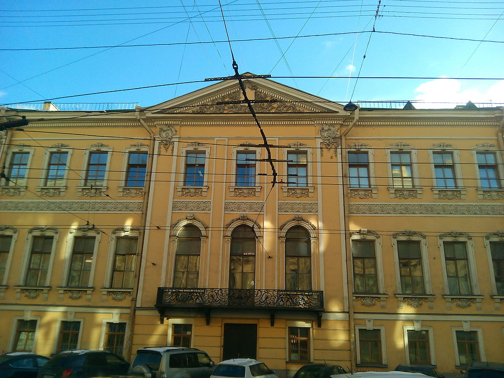
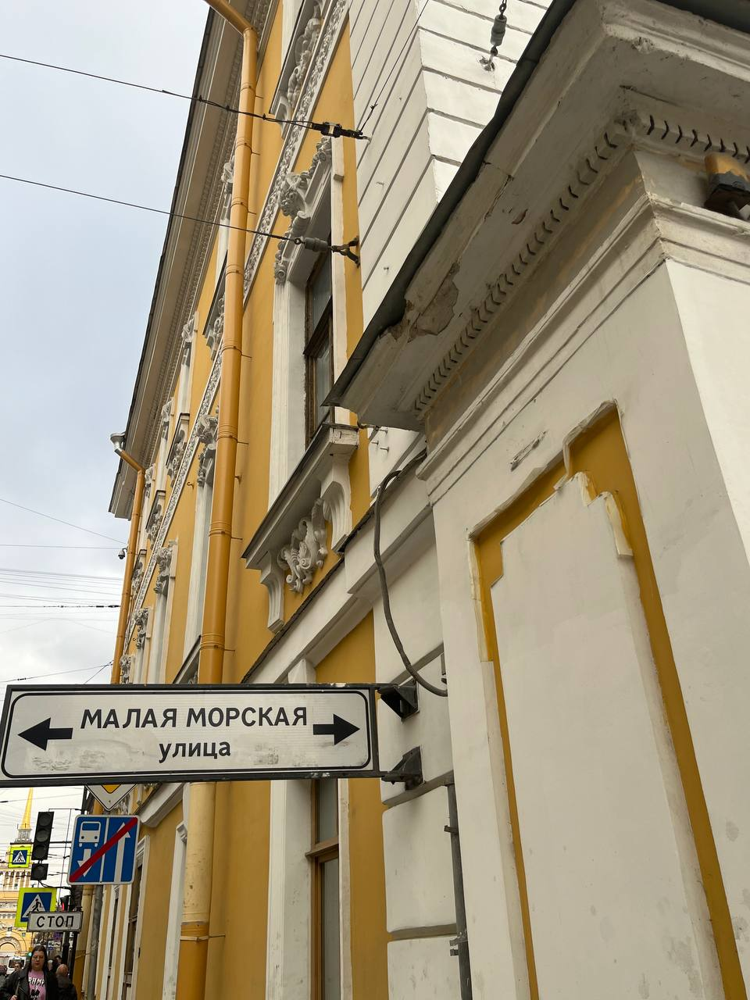
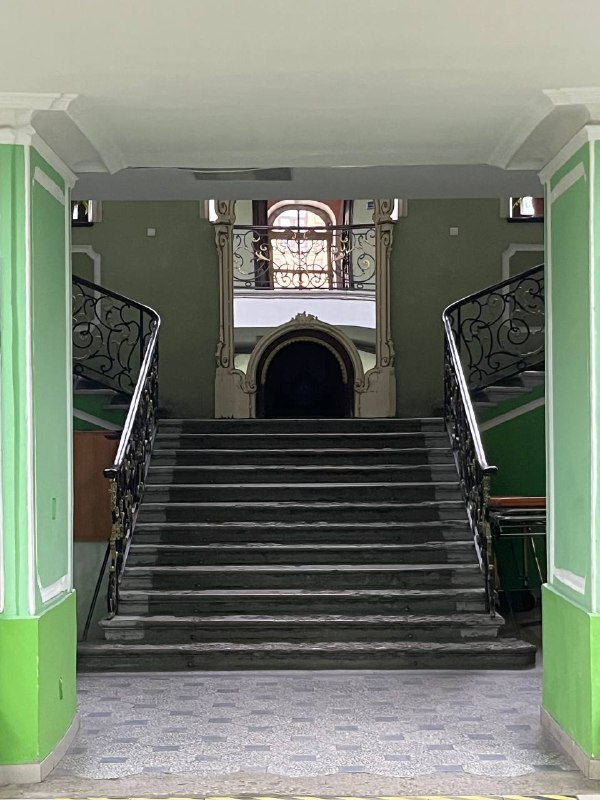
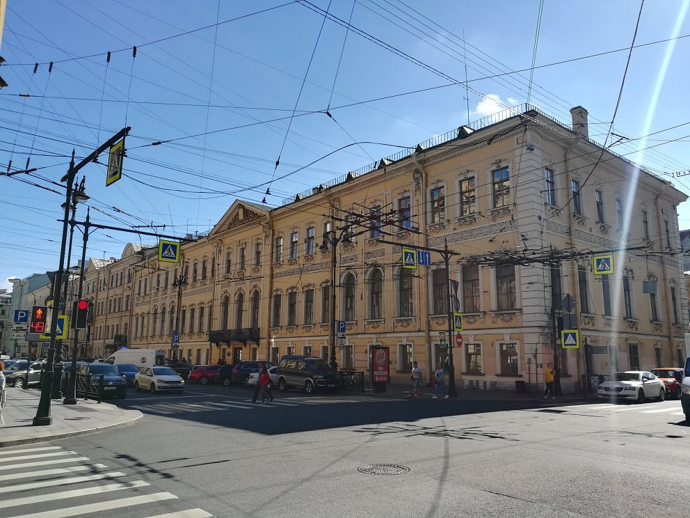

Дом Пиковой дамы

Легенда
Владельцы построенного в XVIII веке трехэтажного дома неоднократно менялись. В 1790 году в доме по адресу Малая Морская, 8 поселились князья Владимир и Наталья Голицыны. Еще при жизни Наталья Петровна считалась прообразом графини из повести А. С. Пушкина «Пиковая дама» — она была достаточно суеверной, поэтому ее образ отлично перекликался с идеей произведения.

Пушкин умер в 1837 году спустя 3 года после выхода «Пиковой дамы». В этом же году умирает Н. П. Голицына. Ее кончина не лишена загадочности — Наталья отмечала, что перед ее окнами часто появлялся призрак офицера в черном, которого она называла «ангелом смерти». Говорят, что офицер возник перед ней и в день смерти. Он пожелал забрать в могилу тело княгини, но оставил в особняке ее неприкаянную душу.

Через 3 года после премьеры своей оперы «Пиковая дама» (1890) умирает композитор П. И. Чайковский. По легенде, в бывшем особняке Голицыной живет призрак Пиковой дамы. Поговаривали, что смерть забирала людей по прошествии 3-х лет с момента встречи с ним. Мистическое число три красной нитью проходит через всю историю этого дома: три года между выходом повести и смертью Пушкина, три года между премьерой оперы и смертью Чайковского. Считается, что призрак княгини появляется в окнах особняка каждую третью ночь после полнолуния, а те, кто встретится с ней взглядом, обречены на несчастье в течение трёх лет.
Что было на самом деле
Дом на Малой Морской, 8 действительно принадлежал князьям Голицыным. Наталья Петровна Голицына — реальная историческая личность, фрейлина при дворе пяти императоров, прожившая почти 100 лет (она родилась в 1741 году и умерла в 1837 году). Пушкин был знаком с ней лично и использовал её образ для создания графини в «Пиковой даме», но лишь отчасти: он взял факт о трёх картах, которые якобы были подсказаны Голицыной графом Сен-Жерменом.

Всё остальное — художественный вымысел. Чайковский действительно умер через 3 года после премьеры оперы, но причиной стала холера, а не мистическое проклятие. Призрак офицера в чёрном, которого якобы видела Голицына перед смертью, — вероятно, предсмертный бред очень пожилой женщины (на момент смерти ей было 96 лет), обработанный городскими сплетниками. Никаких документальных подтверждений явления «ангела смерти» не существует. Сегодня дом на Малой Морской, 8 — обычный жилой дом, в котором иногда проводятся экскурсии, но никакой паранормальной активности его жильцы не отмечают.
← Назад к карте